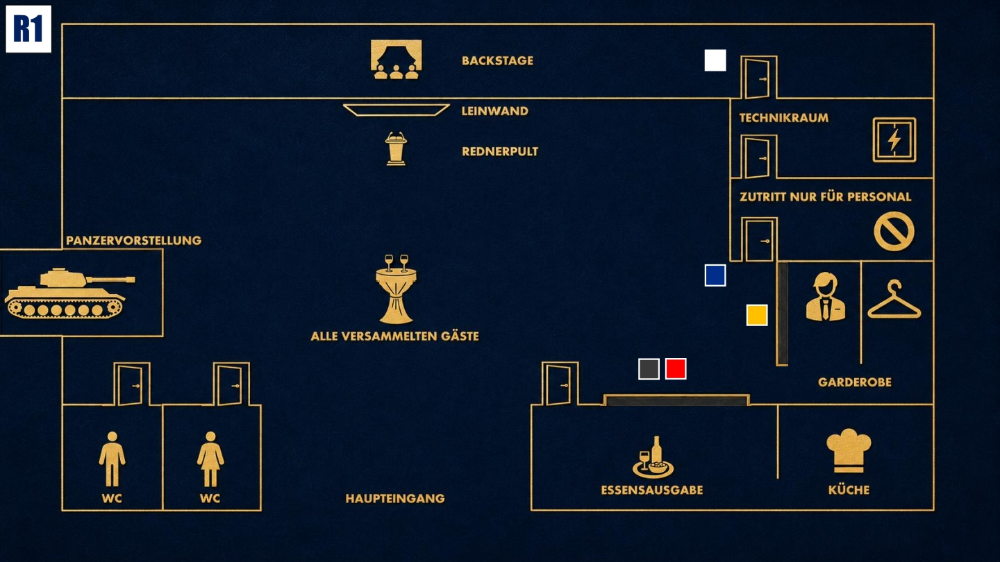

Beobachten & Testen
Lerne die anderen kennen. Finde heraus, wer etwas verbirgt, ohne selbst zu viel preiszugeben.

Das Ziel der ersten Runde
Finde heraus, wie stabil Jake wirklich ist und ob er ahnt, dass dieser Abend kein Zufall ist. Stelle ruhige, gezielte Fragen und beobachte genau, wie er auf Druck reagiert.
Deine Geheimnisse
1. Kein Zufall: Deine Anwesenheit ist nicht zufällig. Du bist hier, weil Jake Winterfield heute beobachtet und unter Druck gesetzt werden soll.
2. Die Tarnung: Dein Name, dein Unternehmen und dein gesamtes Leben in Deutschland sind eine mühsam aufgebaute Tarnexistenz.
Deine Mission
1. Unauffällig bleiben: Wirke wie ein wohlwollender, aber distanzierter Geschäftspartner. Niemand soll erkennen, wie viel du wirklich über diesen Abend weißt.
2. Deine Anwesenheit erklären: Wenn jemand fragt, warum du hier bist, erklärst du ruhig, dass dich strategische Kooperationen, industrielle Sicherheitsfragen und neue Geschäftsfelder interessieren.
Deine Erinnerung an 18:00 Uhr

Zum Vergrößern tippen
Du gibst deine Jacke an der Garderobe ab. Dort siehst du Jake und Zoe an der Essensausgabe. Diego hält sich auffällig in deiner Nähe auf. Außerdem hast du Cole durch den Flur huschen sehen.
Mögliche Fragen
An Jake: „Mir kam zu Ohren, dass du erst seit kurzer Zeit hier angestellt bist. Schon komisch, dass das hier kurz nach deiner Einstellung passiert, oder?“
An Eric: „Ein Blackout bei einem Unternehmen wie Stahlmann & Faust ist bemerkenswert. Wie erklärst du dir so eine Sicherheitslücke?“